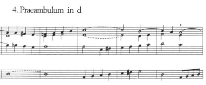
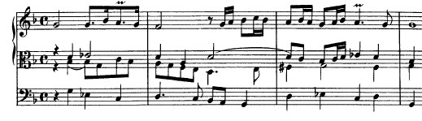

Scheidemann Free Praeludia
Learn to embellish simple harmony with classic gestures.

Buxtehude Chorale Preludes
Turn a hymn tune into a lyrical soprano solo, with contrapuntal accompanimental voices.


Learn to embellish simple harmony with classic gestures.

Turn a hymn tune into a lyrical soprano solo, with contrapuntal accompanimental voices.

This page is still in development and may not function perfectly. Contact gregory-hand@uiowa.edu if you have any questions or comments.